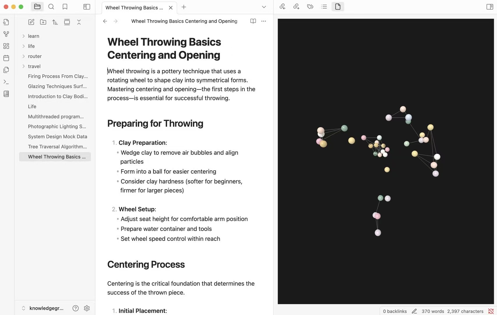
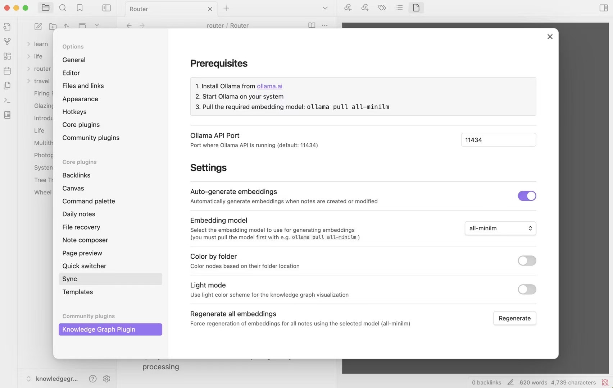
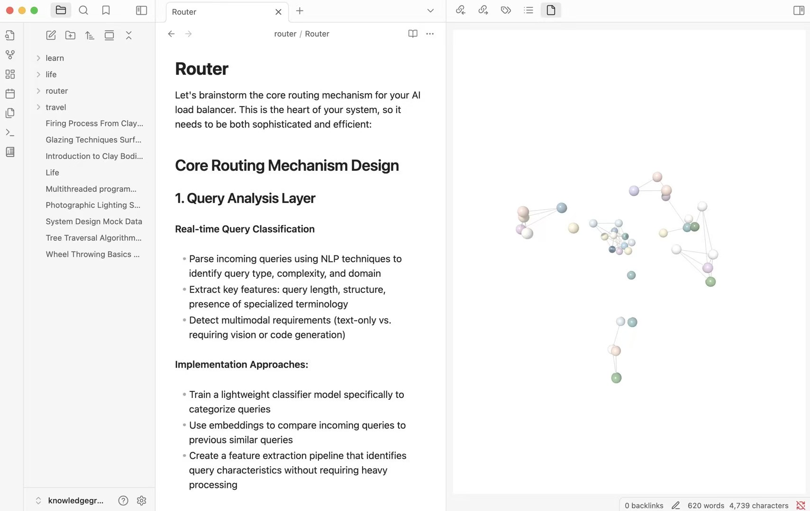

Knowledge Graph Visualization for Obsidian
ollama / embeddings / three.js / webgl / typescript
I have always wanted to visualize every fact I know, every thought I have had, and the feelings behind them. More importantly, I want to see the connections among them, especially the ones I did not know existed.
Traditional note-taking pushes us into folders and timelines, but minds do not work that way. Ideas connect across disciplines, insights emerge from unexpected combinations, and understanding deepens when hidden relationships between concepts become visible.
That is why I built this Obsidian knowledge visualization plugin. It uses AI to understand the semantic meaning of notes and renders them as a 3D graph where proximity reflects conceptual similarity. Instead of hunting through folders, you can see how ideas relate to each other.
When a note about photography appears close to something about psychology, or when a random thought from months ago suddenly connects to current research, the tool stops being only an organizer. It becomes a way to explore the landscape of your own understanding.
Plugin Views



Embedding Pipeline
I integrated Ollama and tested multiple embedding models, including all-MiniLM, nomic-embed-text, and mxbai-embed-large. The pipeline used TypeScript and Python for batch processing, chunking, and embedding generation.
Graph Updates
The graph algorithm was designed for incremental updates so the plugin did not need to recompute the whole vault every time a note changed. That reduced the core update path from quadratic behavior toward linear work for common edits.
Visualization
The frontend used Three.js and WebGL with PCA dimensionality reduction, interactive ray-casting, and adaptive lighting so the graph felt navigable rather than just technically correct.
Perfect For
- Researchers discovering unexpected connections in their literature.
- Writers exploring thematic relationships across their work.
- Knowledge workers visualizing the structure of their expertise.
- Students seeing how concepts interconnect across subjects.